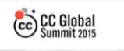

The Global Summit brings together the community of experts, academics, and activists who comprise the Creative Commons affiliate network in a different country every two years.
This year, we hope to expand our invitation list including organizations and individuals who wants to work with us on shared projects that advance the cause of the Commons, free culture and open knowledge.
So if you're active and engaged in the worlds of open content and knowledge - free software advocates, Wikipedians,Open knowledge, galleries, libraries, museum, archives, governments and foundations, lowyers, and activists - we hope you'll consider joining us this year to build a stronger, more vibrant commons together.
Please contact us per Email for any further questions about CC Global Summit 2015!
ccsummit2015@cckorea.org
The logo of CC Global summit 2015 was decided through the logo competition from 8. june to 7. July.
